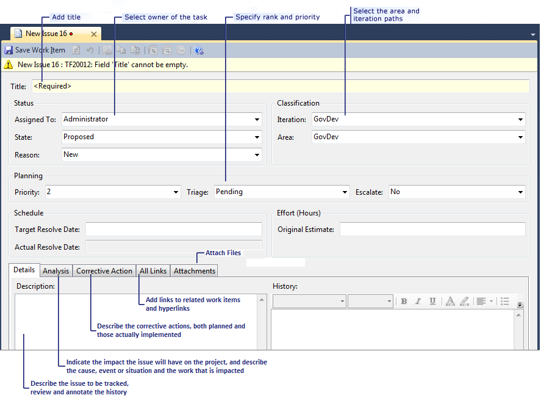
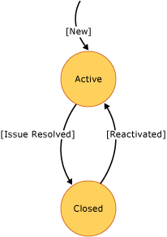

In this topic, you can learn how to fill in the details of an issue work item. For information about how to create this type of work item, see Work Items and Workflow (GovDev).
|
In this topic |
Related topics |
|---|---|
|
Workbooks Field Reference |
Required Permissions
To view an issue, you must be a member of the Readers group or your View work items in this node must be set to Allow. To modify an issue, you must be a member of the Contributors group or your Edit work items in this node permissions must be set to Allow. For more information, see Managing Permissions.
 Defining
an Issue
Defining
an Issue
The work item form for an issue stores data in the fields and tabs that are shown in the following illustration:
To define a single issue
-
In the top section of the work item form, specify one or more of the following types of information:
-
In Title, verify and, if necessary, update the text to more accurately define the problem and the areas of work that are affected.
-
In the Assigned To list, click the name of the team member who is responsible for addressing the issue.
 Note
Note
You can assign work items only to members of the Contributors group.
-
In the Area and Iteration lists, click the appropriate area and iteration, or leave these fields blank to be assigned later during a planning meeting.
Note
Your project administrator defined the Area and Iteration tree hierarchies so that team members can track progress by those designations. For more information, see Create and Modify Areas and Iterations.
-
In the Priority list, click the level of importance of the issue on a scale of 1 to 4, 1 being most important.
By default, this value is 2.
-
In Due Date, click the date by which the issue must be resolved.
By default, this value is the current date.
-
-
On the Details tab, specify one or more of the following types of information:
-
In the Description box, provide as much detail as you want to describe the issue.
-
In the History box, provide as much detail as you want.
You can format the text that you type in this box.
Every time that a team member updates the work item, its history shows the date of the change, the name of the team member who made the change, and the fields that changed.
-
-
Link the issue to other work items, such as a use case or task.
For more information, see the next section in this topic.
-
Click
 Save Work Item.
Save Work Item.
Linking
an Issue to a Use Case, Task, or Other Work Item
On the Links tab, you can link an issue to another work item.
To link an issue to a use case, a task, or another work item
-
On the Links tab, click
 Link to.
Link to. The Add Link to Issue dialog box opens.
-
In the Link Type list, click Related.
-
Perform one of the following actions:
-
In Work item IDs, type the IDs of the work items that you want to find. Separate IDs by commas or spaces.
-
Click Browse to specify work items from a list.
The Choose linked work items dialog box appears.

In the Saved query list, click a query that contains the work items that you want to add. For example, you can click Open Use Cases or Open Tasks.
Click Find, and then select the check box next to each work item that you want to link to the issue.
Click OK.
-
(Optional) Type a description for the items that you are linking to.
-
-
Click OK.
For more information, see Find Work Items to Link or Import.
-
Click
Save Work Item. Note
Both the issue and the items to which you linked are updated. A Related link to the issue is defined for each work item that you added.
Adding
Details, Attachments, or Hyperlinks to an Issue
You can add information to an issue as more information becomes available. You add details to an issue in the following ways:
-
Type information in the Description or History field.
-
Attach a file.
For example, you can attach an e-mail thread, a document, an image, a log file, or another type of file.
-
Add a hyperlink to a Web site or to a file that is stored on a server or Web site.
To add details to an issue
-
Click the Details tab.
-
Type information in the Description field.
-
(Optional) Type information in the History field.
You can format information to provide emphasis or capture a bulleted list. For more information, see Titles, IDs, Descriptions, and History (GovDev).
-
Click
Save Work Item.
To add an attachment to an issue
-
On the Attachments tab, perform one of the following actions:
-
Drag a file into the attachment area.
-
Click
 or press CTRL-V to paste a file that you have copied.
or press CTRL-V to paste a file that you have copied. -
Click
 Add, click Browse, and, in the Attachment dialog box, type or browse to the name of the file
that you want to attach.
Add, click Browse, and, in the Attachment dialog box, type or browse to the name of the file
that you want to attach. (Optional) In the Comment box, type additional information about the attachment. To close the Attachment dialog box, click OK.
-
-
Click
Save Work Item.
To add a hyperlink to an issue
-
On the Links tab, click
Link to. -
In the Link Type list, click Hyperlink.
-
In the Address box, perform one of the following actions:
-
If the target is a Web site, type the URL, or copy it from your Internet browser and paste it into the Address box.
-
If the target is a server location, type its UNC address.
-
-
(Optional) In the Comment box, type additional information about the hyperlink.
-
Click OK.
-
Click
Save Work Item.
Closing
an Issue
After an issue has been resolved and is no longer blocking progress, you change the state from active to closed. For more information about data fields that track states of work items, see Assignments and Workflow (GovDev).
To close an issue
-
Open the issue.
-
In the State list, click Closed.
-
Click
Save Work Item.
|
Typical workflow progression:
Additional workflow transitions states:
|
Issue State Diagram  |
Active (New)
All work items are created in the Active state. Each issue remains in the active state as it is being implemented. The team member who is assigned to the issue tracks its progress and that of any use cases, tasks, or other work items that it affects.
From Active to Closed
When you close an issue, the Assigned To field is automatically populated with the name of the team member who created the issue, and the Reason field is set to Issue Resolved.
The following data fields are automatically captured during the transition from active to closed:
-
Closed By: Name of the team member who closed the work item.
-
Closed Date: Date and time when the work item was closed, as recorded by the server clock.
-
State Change Date: Date and time when the state for the work item was changed.
Closed
Any team member can reactivate a closed issue if it was closed in error.
From Closed to Active
When you reactivate an issue, the Assigned To field is automatically populated with the name of the team member who closed the issue. The Reason field is set to Reactivated.
The following data is automatically captured during the transition from closed to active:
-
Activated By: Name of the team member who reactivated the work item.
-
Activated Date: Date and time when the work item was reactivated, as recorded by the server clock.